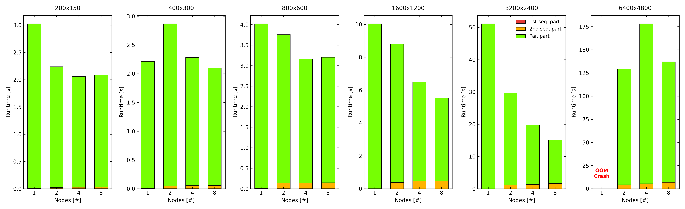
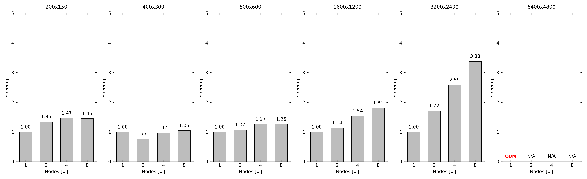
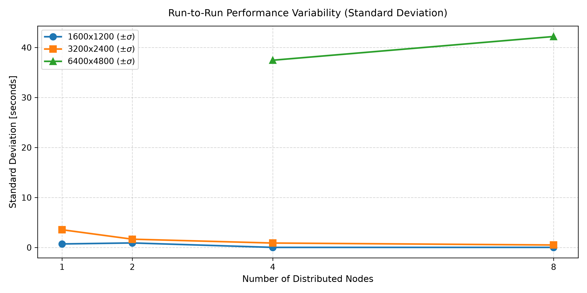
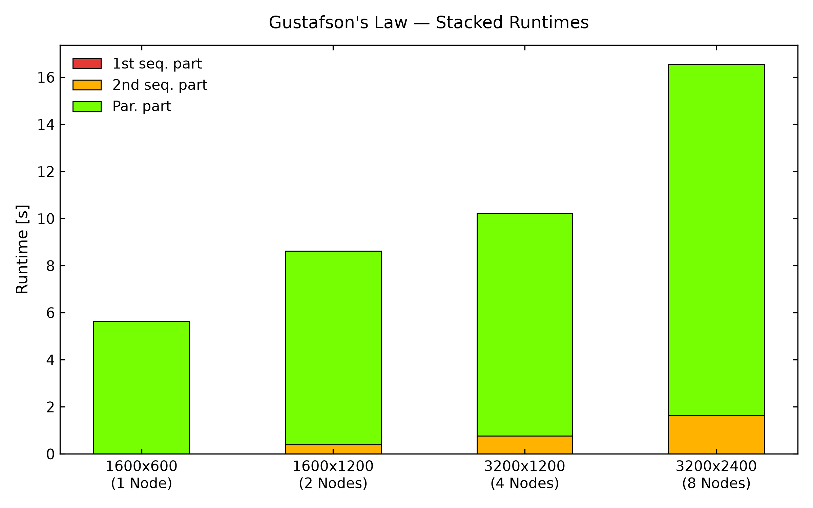
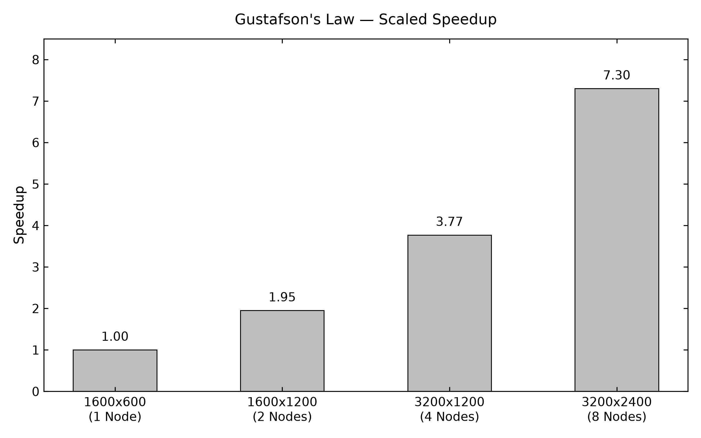
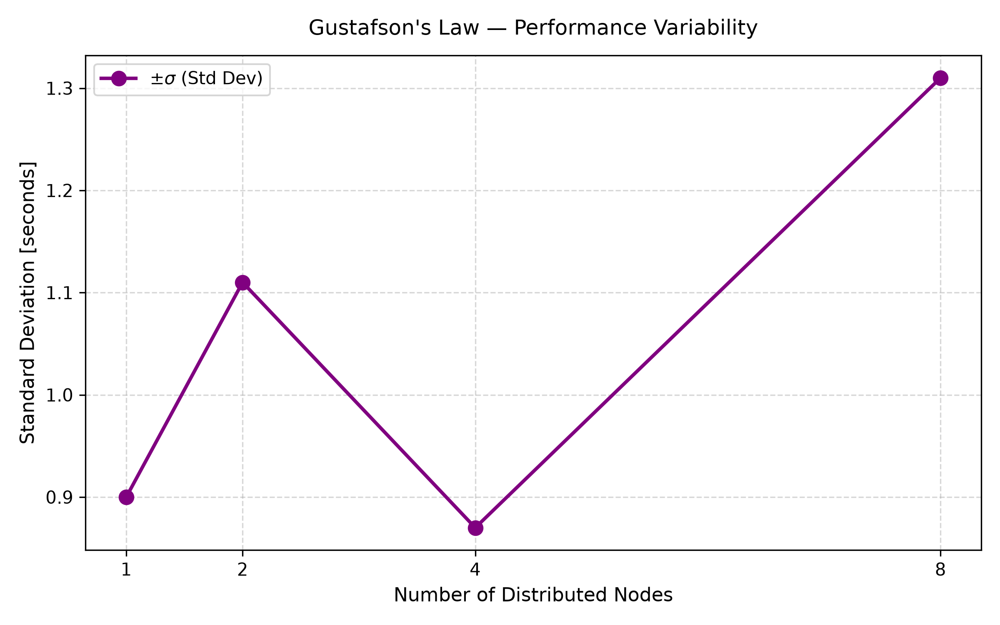
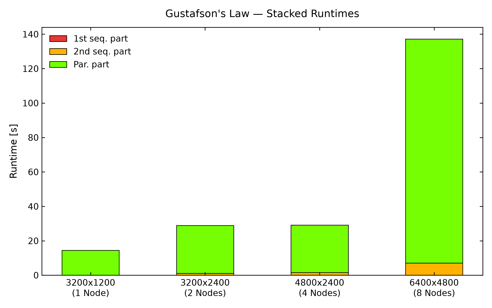
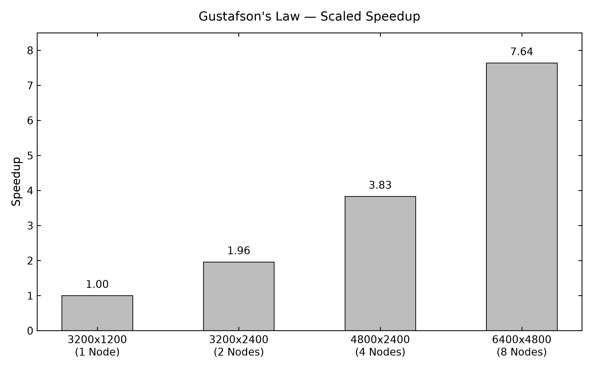
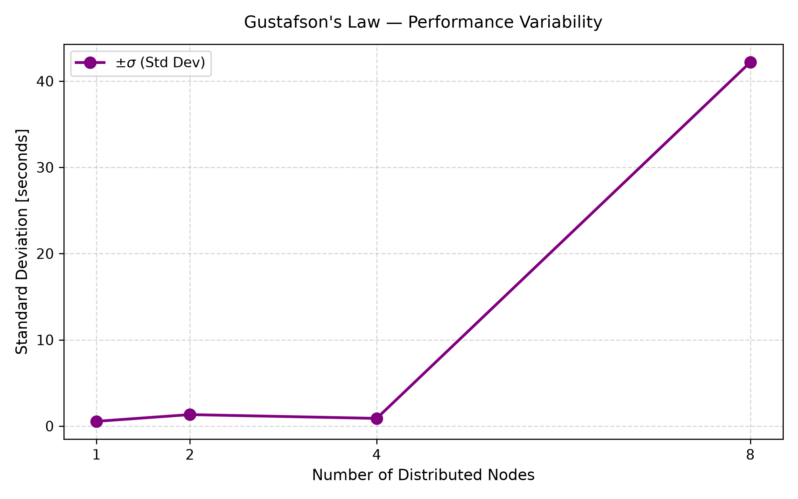

Task 4: Non-MPI Scaling Laws (Task Distributor)
Overview
This document covers the results and findings of Task Distributor experiments, which we used to demonstrate Amdahl's Law and Gustafson's Law on our Raspberry Pi cluster.
Task Distributor is a bash-based parallel image rendering tool that splits a POV-Ray
render job across multiple cluster nodes. The scene file used is blob.pov — a
built-in POV-Ray mathematical 3D scene (a metaball/blob shape) that ships with the
povray-examples package. No custom image is needed; POV-Ray generates the PNG from
the scene description. Each worker renders a horizontal strip of the final image,
making it ideal for demonstrating parallel computing laws.
Experiment 1: Amdahl's Law — 5 Runs × 6 Workloads
200 x 150 — 5 Runs Per Node Configuration
1 Nodes — 200x150
| Run | Seq Part 1 | Parallel Part | Seq Part 2 | Total Time |
|---|---|---|---|---|
| 1 | 0.012s | 4.019s | 0.012s | 4.043s |
| 2 | 0.003s | 2.012s | 0.006s | 2.021s |
| 3 | 0.004s | 3.020s | 0.007s | 3.031s |
| 4 | 0.004s | 3.013s | 0.007s | 3.024s |
| 5 | 0.004s | 3.015s | 0.005s | 3.024s |
| AVG | 0.005s | 3.015s | 0.007s | 3.027s |
2 Nodes — 200x150
| Run | Seq Part 1 | Parallel Part | Seq Part 2 | Total Time |
|---|---|---|---|---|
| 1 | 0.003s | 3.018s | 0.023s | 3.044s |
| 2 | 0.003s | 2.014s | 0.024s | 2.041s |
| 3 | 0.003s | 2.013s | 0.022s | 2.038s |
| 4 | 0.003s | 2.013s | 0.021s | 2.037s |
| 5 | 0.003s | 2.019s | 0.023s | 2.045s |
| AVG | 0.003s | 2.215s | 0.022s | 2.240s |
4 Nodes — 200x150
| Run | Seq Part 1 | Parallel Part | Seq Part 2 | Total Time |
|---|---|---|---|---|
| 1 | 0.003s | 2.026s | 0.023s | 2.052s |
| 2 | 0.003s | 2.030s | 0.023s | 2.056s |
| 3 | 0.003s | 2.026s | 0.024s | 2.053s |
| 4 | 0.003s | 2.026s | 0.031s | 2.060s |
| 5 | 0.005s | 2.033s | 0.031s | 2.069s |
| AVG | 0.003s | 2.028s | 0.026s | 2.057s |
8 Nodes — 200x150
| Run | Seq Part 1 | Parallel Part | Seq Part 2 | Total Time |
|---|---|---|---|---|
| 1 | 0.003s | 2.045s | 0.024s | 2.072s |
| 2 | 0.003s | 2.058s | 0.041s | 2.102s |
| 3 | 0.003s | 2.050s | 0.025s | 2.078s |
| 4 | 0.003s | 2.049s | 0.025s | 2.077s |
| 5 | 0.003s | 2.052s | 0.035s | 2.090s |
| AVG | 0.003s | 2.050s | 0.030s | 2.083s |
1 Nodes — 400x300
| Run | Seq Part 1 | Parallel Part | Seq Part 2 | Total Time |
|---|---|---|---|---|
| 1 | 0.003s | 2.009s | 0.004s | 2.016s |
| 2 | 0.003s | 2.009s | 0.004s | 2.016s |
| 3 | 0.004s | 3.013s | 0.005s | 3.022s |
| 4 | 0.003s | 2.009s | 0.004s | 2.016s |
| 5 | 0.003s | 2.009s | 0.006s | 2.018s |
| AVG | 0.003s | 2.209s | 0.004s | 2.216s |
2 Nodes — 400x300
| Run | Seq Part 1 | Parallel Part | Seq Part 2 | Total Time |
|---|---|---|---|---|
| 1 | 0.003s | 3.020s | 0.047s | 3.070s |
| 2 | 0.003s | 3.017s | 0.052s | 3.072s |
| 3 | 0.003s | 2.014s | 0.045s | 2.062s |
| 4 | 0.003s | 3.017s | 0.048s | 3.068s |
| 5 | 0.003s | 3.016s | 0.067s | 3.086s |
| AVG | 0.003s | 2.816s | 0.051s | 2.870s |
4 Nodes — 400x300
| Run | Seq Part 1 | Parallel Part | Seq Part 2 | Total Time |
|---|---|---|---|---|
| 1 | 0.004s | 2.025s | 0.044s | 2.073s |
| 2 | 0.002s | 2.025s | 0.045s | 2.072s |
| 3 | 0.003s | 2.036s | 0.062s | 2.101s |
| 4 | 0.004s | 2.025s | 0.047s | 2.076s |
| 5 | 0.003s | 3.029s | 0.068s | 3.100s |
| AVG | 0.003s | 2.228s | 0.053s | 2.284s |
8 Nodes — 400x300
| Run | Seq Part 1 | Parallel Part | Seq Part 2 | Total Time |
|---|---|---|---|---|
| 1 | 0.004s | 2.043s | 0.046s | 2.093s |
| 2 | 0.003s | 2.042s | 0.067s | 2.112s |
| 3 | 0.003s | 2.047s | 0.052s | 2.102s |
| 4 | 0.003s | 2.044s | 0.049s | 2.096s |
| 5 | 0.003s | 2.052s | 0.064s | 2.119s |
| AVG | 0.003s | 2.045s | 0.055s | 2.103s |
1 Nodes — 800x600
| Run | Seq Part 1 | Parallel Part | Seq Part 2 | Total Time |
|---|---|---|---|---|
| 1 | 0.003s | 4.016s | 0.007s | 4.026s |
| 2 | 0.004s | 4.015s | 0.004s | 4.023s |
| 3 | 0.003s | 4.015s | 0.006s | 4.024s |
| 4 | 0.004s | 4.014s | 0.005s | 4.023s |
| 5 | 0.003s | 4.014s | 0.007s | 4.024s |
| AVG | 0.003s | 4.014s | 0.005s | 4.022s |
2 Nodes — 800x600
| Run | Seq Part 1 | Parallel Part | Seq Part 2 | Total Time |
|---|---|---|---|---|
| 1 | 0.003s | 4.018s | 0.158s | 4.179s |
| 2 | 0.003s | 4.017s | 0.122s | 4.142s |
| 3 | 0.003s | 4.018s | 0.121s | 4.142s |
| 4 | 0.003s | 3.018s | 0.156s | 3.177s |
| 5 | 0.003s | 3.020s | 0.122s | 3.145s |
| AVG | 0.003s | 3.618s | 0.135s | 3.756s |
4 Nodes — 800x600
| Run | Seq Part 1 | Parallel Part | Seq Part 2 | Total Time |
|---|---|---|---|---|
| 1 | 0.003s | 3.027s | 0.126s | 3.156s |
| 2 | 0.004s | 3.029s | 0.153s | 3.186s |
| 3 | 0.003s | 3.030s | 0.127s | 3.160s |
| 4 | 0.003s | 3.027s | 0.148s | 3.178s |
| 5 | 0.003s | 3.031s | 0.133s | 3.167s |
| AVG | 0.003s | 3.028s | 0.137s | 3.168s |
8 Nodes — 800x600
| Run | Seq Part 1 | Parallel Part | Seq Part 2 | Total Time |
|---|---|---|---|---|
| 1 | 0.003s | 3.058s | 0.167s | 3.228s |
| 2 | 0.003s | 3.052s | 0.132s | 3.187s |
| 3 | 0.003s | 3.056s | 0.149s | 3.208s |
| 4 | 0.003s | 3.058s | 0.132s | 3.193s |
| 5 | 0.004s | 3.059s | 0.152s | 3.215s |
| AVG | 0.003s | 3.056s | 0.146s | 3.205s |
1 Nodes — 1600x1200
| Run | Seq Part 1 | Parallel Part | Seq Part 2 | Total Time |
|---|---|---|---|---|
| 1 | 0.004s | 11.032s | 0.005s | 11.041s |
| 2 | 0.003s | 10.030s | 0.005s | 10.038s |
| 3 | 0.005s | 9.027s | 0.005s | 9.037s |
| 4 | 0.003s | 10.029s | 0.005s | 10.037s |
| 5 | 0.003s | 10.032s | 0.005s | 10.040s |
| AVG | 0.003s | 10.030s | 0.005s | 10.038s |
2 Nodes — 1600x1200
| Run | Seq Part 1 | Parallel Part | Seq Part 2 | Total Time |
|---|---|---|---|---|
| 1 | 0.003s | 10.038s | 0.403s | 10.444s |
| 2 | 0.003s | 8.030s | 0.355s | 8.388s |
| 3 | 0.003s | 8.030s | 0.356s | 8.389s |
| 4 | 0.003s | 8.032s | 0.372s | 8.407s |
| 5 | 0.007s | 8.037s | 0.389s | 8.433s |
| AVG | 0.003s | 8.433s | 0.375s | 8.811s |
4 Nodes — 1600x1200
| Run | Seq Part 1 | Parallel Part | Seq Part 2 | Total Time |
|---|---|---|---|---|
| 1 | 0.004s | 6.039s | 0.442s | 6.485s |
| 2 | 0.003s | 6.037s | 0.453s | 6.493s |
| 3 | 0.003s | 6.033s | 0.500s | 6.536s |
| 4 | 0.003s | 6.037s | 0.479s | 6.519s |
| 5 | 0.003s | 6.037s | 0.451s | 6.491s |
| AVG | 0.003s | 6.036s | 0.465s | 6.504s |
8 Nodes — 1600x1200
| Run | Seq Part 1 | Parallel Part | Seq Part 2 | Total Time |
|---|---|---|---|---|
| 1 | 0.004s | 5.061s | 0.447s | 5.512s |
| 2 | 0.003s | 5.057s | 0.466s | 5.526s |
| 3 | 0.003s | 5.055s | 0.496s | 5.554s |
| 4 | 0.004s | 5.054s | 0.473s | 5.531s |
| 5 | 0.004s | 5.060s | 0.481s | 5.545s |
| AVG | 0.003s | 5.057s | 0.472s | 5.532s |
1 Nodes — 3200x2400
| Run | Seq Part 1 | Parallel Part | Seq Part 2 | Total Time |
|---|---|---|---|---|
| 1 | 0.003s | 45.117s | 0.006s | 45.126s |
| 2 | 0.004s | 51.140s | 0.010s | 51.154s |
| 3 | 0.004s | 52.158s | 0.009s | 52.171s |
| 4 | 0.004s | 54.139s | 0.006s | 54.149s |
| 5 | 0.004s | 53.154s | 0.012s | 53.170s |
| AVG | 0.003s | 51.141s | 0.008s | 51.152s |
2 Nodes — 3200x2400
| Run | Seq Part 1 | Parallel Part | Seq Part 2 | Total Time |
|---|---|---|---|---|
| 1 | 0.003s | 31.092s | 1.223s | 32.318s |
| 2 | 0.003s | 28.080s | 1.280s | 29.363s |
| 3 | 0.003s | 27.085s | 1.324s | 28.412s |
| 4 | 0.003s | 29.086s | 1.143s | 30.232s |
| 5 | 0.003s | 27.076s | 1.152s | 28.231s |
| AVG | 0.003s | 28.483s | 1.224s | 29.710s |
4 Nodes — 3200x2400
| Run | Seq Part 1 | Parallel Part | Seq Part 2 | Total Time |
|---|---|---|---|---|
| 1 | 0.003s | 18.063s | 1.340s | 19.406s |
| 2 | 0.003s | 20.073s | 1.281s | 21.357s |
| 3 | 0.003s | 18.063s | 1.303s | 19.369s |
| 4 | 0.003s | 18.068s | 1.268s | 19.339s |
| 5 | 0.003s | 18.066s | 1.326s | 19.395s |
| AVG | 0.003s | 18.466s | 1.303s | 19.772s |
8 Nodes — 3200x2400
| Run | Seq Part 1 | Parallel Part | Seq Part 2 | Total Time |
|---|---|---|---|---|
| 1 | 0.003s | 14.075s | 1.602s | 15.680s |
| 2 | 0.003s | 13.083s | 1.875s | 14.961s |
| 3 | 0.003s | 13.080s | 1.619s | 14.702s |
| 4 | 0.003s | 14.077s | 1.579s | 15.659s |
| 5 | 0.003s | 13.078s | 1.599s | 14.680s |
| AVG | 0.003s | 13.478s | 1.654s | 15.135s |
1 Nodes — 6400x4800
| Run | Seq Part 1 | Parallel Part | Seq Part 2 | Total Time |
|---|---|---|---|---|
| 1 | s | s | s | 0.000s |
| 2 | s | s | s | 0.000s |
| 3 | s | s | s | 0.000s |
| 4 | s | s | s | 0.000s |
| 5 | s | s | s | 0.000s |
| AVG | 0.000s | 0.000s | 0.000s | 0.000s |
pi@worker1:~$ ls /tmp
pov16274 pov16686 systemd-private-aff2169b8e5a468f809d349af9090f28-ModemManager.service-31fSVJ
pov16525 pov16709 systemd-private-aff2169b8e5a468f809d349af9090f28-bluetooth.service-cAnUhH
pov16655 povraymessages systemd-private-aff2169b8e5a468f809d349af9090f28-systemd-logind.service-rtsZrp
pi@worker1:~$ ls -l /tmp
total 464516
-rw------- 1 pi pi 614400024 Jul 13 01:18 pov16274
-rw------- 1 pi pi 614400024 Jul 13 01:54 pov16525
-rw------- 1 pi pi 614400024 Jul 13 01:54 pov16655
-rw------- 1 pi pi 0 Jul 13 01:54 pov16686
-rw------- 1 pi pi 0 Jul 13 01:54 pov16709
-rw-r--r-- 1 pi pi 331 Jul 13 01:54 povraymessages
drwx------ 3 root root 60 Nov 19 2024 systemd-private-aff2169b8e5a468f809d349af9090f28-ModemManager.service-31fSVJ
drwx------ 3 root root 60 Nov 19 2024 systemd-private-aff2169b8e5a468f809d349af9090f28-bluetooth.service-cAnUhH
drwx------ 3 root root 60 Nov 19 2024 systemd-private-aff2169b8e5a468f809d349af9090f28-systemd-logind.service-rtsZrp
pi@worker1:~$
More logs like this can be found in the task-dist-results.txt (note that those are not clean!)
2 Nodes — 6400x4800
| Run | Seq Part 1 | Parallel Part | Seq Part 2 | Total Time |
|---|---|---|---|---|
| 1 | 0.005s | 123.347s | 4.707s | 128.059s |
| 2 | 0.004s | 123.359s | 4.313s | 127.676s |
| 3 | 0.003s | 124.349s | 4.338s | 128.690s |
| 4 | 0.003s | 124.343s | 4.498s | 128.844s |
| 5 | 0.003s | 124.752s | 4.248s | 129.003s |
| AVG | 0.003s | 124.752s | 4.420s | 129.175s |
4 Nodes — 6400x4800
| Run | Seq Part 1 | Parallel Part | Seq Part 2 | Total Time |
|---|---|---|---|---|
| 1 | 0.003s | 137.411s | 5.209s | 142.623s |
| 2 | 0.003s | 210.612s | 4.976s | 215.591s |
| 3 | 0.003s | 135.408s | 6.615s | 142.026s |
| 4 | 0.005s | 166.494s | 5.945s | 172.444s |
| 5 | 0.005s | 213.610s | 4.624s | 218.239s |
| AVG | 0.003s | 172.707s | 5.473s | 178.183s |
8 Nodes — 6400x4800
| Run | Seq Part 1 | Parallel Part | Seq Part 2 | Total Time |
|---|---|---|---|---|
| 1 | 0.003s | 166.535s | 6.572s | 173.110s |
| 2 | 0.003s | 92.357s | 7.702s | 100.062s |
| 3 | 0.007s | 119.410s | 6.373s | 125.790s |
| 4 | 0.006s | 89.370s | 7.904s | 97.280s |
| 5 | 0.004s | 182.602s | 6.804s | 189.410s |
| AVG | 0.004s | 130.054s | 7.071s | 137.129s |
Amdahl's Law — Summary Table (Averages of 5 Runs)
| Workload | Nodes | Avg Seq 1 | Avg Parallel | Avg Seq 2 | Avg Total Time | Std Dev | Speedup | Efficiency |
|---|---|---|---|---|---|---|---|---|
| 200x150 | 1 | 0.005s | 3.015s | 0.007s | 3.027s | ±0.71s | 1.00x | 100% |
| 200x150 | 2 | 0.003s | 2.215s | 0.022s | 2.240s | ±0.45s | 1.35x | 68% |
| 200x150 | 4 | 0.003s | 2.028s | 0.026s | 2.057s | ±0.01s | 1.47x | 37% |
| 200x150 | 8 | 0.003s | 2.050s | 0.030s | 2.083s | ±0.01s | 1.45x | 18% |
| 400x300 | 1 | 0.003s | 2.209s | 0.004s | 2.216s | ±0.45s | 1.00x | 100% |
| 400x300 | 2 | 0.003s | 2.816s | 0.051s | 2.870s | ±0.45s | 0.77x | 39% |
| 400x300 | 4 | 0.003s | 2.228s | 0.053s | 2.284s | ±0.46s | 0.97x | 24% |
| 400x300 | 8 | 0.003s | 2.045s | 0.055s | 2.103s | ±0.01s | 1.05x | 13% |
| 800x600 | 1 | 0.003s | 4.014s | 0.005s | 4.022s | ±0.00s | 1.00x | 100% |
| 800x600 | 2 | 0.003s | 3.618s | 0.135s | 3.756s | ±0.54s | 1.07x | 54% |
| 800x600 | 4 | 0.003s | 3.028s | 0.137s | 3.168s | ±0.01s | 1.27x | 32% |
| 800x600 | 8 | 0.003s | 3.056s | 0.146s | 3.205s | ±0.02s | 1.26x | 16% |
| 1600x1200 | 1 | 0.003s | 10.030s | 0.005s | 10.038s | ±0.71s | 1.00x | 100% |
| 1600x1200 | 2 | 0.003s | 8.433s | 0.375s | 8.811s | ±0.91s | 1.14x | 57% |
| 1600x1200 | 4 | 0.003s | 6.036s | 0.465s | 6.504s | ±0.02s | 1.54x | 39% |
| 1600x1200 | 8 | 0.003s | 5.057s | 0.472s | 5.532s | ±0.02s | 1.81x | 23% |
| 2000x1504 | 8 | N/A | N/A | N/A | 8.366s | ±0.54s | N/A | N/A |
| 3200x2400 | 1 | 0.003s | 51.141s | 0.008s | 51.152s | ±3.55s | 1.00x | 100% |
| 3200x2400 | 2 | 0.003s | 28.483s | 1.224s | 29.710s | ±1.66s | 1.72x | 86% |
| 3200x2400 | 4 | 0.003s | 18.466s | 1.303s | 19.772s | ±0.89s | 2.59x | 65% |
| 3200x2400 | 8 | 0.003s | 13.478s | 1.654s | 15.135s | ±0.50s | 3.38x | 42% |
| 6400x4800 | 1 | 0.000s | 0.000s | 0.000s | 0.000s | ±0.00s | N/A | N/A |
| 6400x4800 | 4 | 0.003s | 172.707s | 5.473s | 178.183s | ±37.45s | N/A | N/A |
| 6400x4800 | 8 | 0.004s | 130.054s | 7.071s | 137.129s | ±42.19s | N/A | N/A |
Key insight: With smaller image size adding more nodes give diminishing or worse performance returns (e.g. 200x150 - [2, 4, 8]) probably because of the NFS overhead.
Amdahl's Law — Graphs



Experiment 2: Gustafson's Law
Theory
Gustafson's Law addresses Amdahl's pessimism by noting that in practice, larger problems benefit more from parallelism:
Approach: Scale the image size proportionally with the number of nodes, keeping the work per node constant (each node always renders 120 rows).
| Nodes | Image Size | Rows per Node |
|---|---|---|
| 1 | 160×120 | 120 rows |
| 2 | 160×240 | 120 rows each |
| 4 | 160×480 | 120 rows each |
| 8 | 160×960 | 120 rows each |
Single-Run Results (Empirical — Measured on Physical Cluster)
| Nodes | Image Size | Seq Part 1 | Parallel Part | Seq Part 2 | Total Time |
|---|---|---|---|---|---|
| 1 | 160×120 | 0.004s | 3.014s | 0.006s | 3.024s |
| 2 | 160×240 | 0.004s | 3.019s | 0.034s | 3.057s |
| 4 | 160×480 | 0.004s | 3.030s | 0.044s | 3.078s |
| 8 | 160×960 | 0.004s | 4.063s | 0.088s | 4.155s |
Experiment 2: Gustafson's Law — 5 Runs x Workfload Set 1
1600x600 / node Base — 5 Runs
1 Nodes — 1600x600
| Run | Seq Part 1 | Parallel Part | Seq Part 2 | Total Time |
|---|---|---|---|---|
| 1 | 0.006s | 7.025s | 0.010s | 7.041s |
| 2 | 0.004s | 6.021s | 0.006s | 6.031s |
| 3 | 0.004s | 5.018s | 0.006s | 5.028s |
| 4 | 0.004s | 5.018s | 0.005s | 5.027s |
| 5 | 0.003s | 5.019s | 0.006s | 5.028s |
| AVG | 0.004s | 5.620s | 0.006s | 5.630s |
2 Nodes — 1600x1200
| Run | Seq Part 1 | Parallel Part | Seq Part 2 | Total Time |
|---|---|---|---|---|
| 1 | 0.003s | 10.038s | 0.403s | 10.444s |
| 2 | 0.003s | 8.028s | 0.359s | 8.390s |
| 3 | 0.003s | 8.029s | 0.392s | 8.424s |
| 4 | 0.003s | 8.042s | 0.431s | 8.476s |
| 5 | 0.003s | 7.030s | 0.354s | 7.387s |
| AVG | 0.003s | 8.233s | 0.387s | 8.623s |
4 Nodes — 3200x1200
| Run | Seq Part 1 | Parallel Part | Seq Part 2 | Total Time |
|---|---|---|---|---|
| 1 | 0.003s | 11.051s | 0.729s | 11.783s |
| 2 | 0.003s | 9.048s | 0.787s | 9.838s |
| 3 | 0.003s | 9.050s | 0.830s | 9.883s |
| 4 | 0.003s | 9.046s | 0.775s | 9.824s |
| 5 | 0.005s | 9.050s | 0.740s | 9.795s |
| AVG | 0.003s | 9.449s | 0.772s | 10.224s |
8 Nodes — 3200x2400
| Run | Seq Part 1 | Parallel Part | Seq Part 2 | Total Time |
|---|---|---|---|---|
| 1 | 0.004s | 16.087s | 1.692s | 17.783s |
| 2 | 0.004s | 15.090s | 1.600s | 16.694s |
| 3 | 0.007s | 16.110s | 1.605s | 17.722s |
| 4 | 0.003s | 14.079s | 1.701s | 15.783s |
| 5 | 0.003s | 13.082s | 1.644s | 14.729s |
| AVG | 0.004s | 14.889s | 1.648s | 16.541s |
Gustafson's Law (Set 1) — Summary Table (Averages of 5 Runs)
| Size | Nodes | Avg Seq 1 | Avg Parallel | Avg Seq 2 | Avg Total Time | Std Dev | Scaled Speedup | Efficiency |
|---|---|---|---|---|---|---|---|---|
| 1600x600 | 1 | 0.004s | 5.620s | 0.006s | 5.630s | ±0.90s | 1.00x | 100% |
| 1600x1200 | 2 | 0.003s | 8.233s | 0.387s | 8.623s | ±1.11s | 1.95x | 98% |
| 3200x1200 | 4 | 0.003s | 9.449s | 0.772s | 10.224s | ±0.87s | 3.77x | 94% |
| 3200x2400 | 8 | 0.004s | 14.889s | 1.648s | 16.541s | ±1.31s | 7.30x | 91% |
Gustafson's Law (Set 1) — Graphs



Experiment 2: Gustafson's Law — 5 Runs x Workfload Set 2
1 Nodes — 3200x1200
| Run | Seq Part 1 | Parallel Part | Seq Part 2 | Total Time |
|---|---|---|---|---|
| 1 | 0.005s | 15.042s | 0.006s | 15.053s |
| 2 | 0.004s | 15.041s | 0.004s | 15.049s |
| 3 | 0.003s | 14.041s | 0.007s | 14.051s |
| 4 | 0.004s | 14.043s | 0.004s | 14.051s |
| 5 | 0.004s | 14.041s | 0.004s | 14.049s |
| AVG | 0.004s | 14.441s | 0.005s | 14.450s |
2 Nodes — 3200x2400
| Run | Seq Part 1 | Parallel Part | Seq Part 2 | Total Time |
|---|---|---|---|---|
| 1 | 0.003s | 27.088s | 1.204s | 28.295s |
| 2 | 0.003s | 30.085s | 1.143s | 31.231s |
| 3 | 0.003s | 27.075s | 1.127s | 28.205s |
| 4 | 0.003s | 27.078s | 1.162s | 28.243s |
| 5 | 0.003s | 27.085s | 1.180s | 28.268s |
| AVG | 0.003s | 27.682s | 1.163s | 28.848s |
4 Nodes — 4800x2400
| Run | Seq Part 1 | Parallel Part | Seq Part 2 | Total Time |
|---|---|---|---|---|
| 1 | 0.003s | 29.099s | 1.631s | 30.733s |
| 2 | 0.002s | 27.090s | 1.630s | 28.722s |
| 3 | 0.002s | 27.096s | 1.654s | 28.752s |
| 4 | 0.002s | 27.088s | 1.700s | 28.790s |
| 5 | 0.003s | 27.091s | 1.661s | 28.755s |
| AVG | 0.002s | 27.492s | 1.655s | 29.149s |
8 Nodes — 6400x4800
| Run | Seq Part 1 | Parallel Part | Seq Part 2 | Total Time |
|---|---|---|---|---|
| 1 | 0.003s | 166.535s | 6.572s | 173.110s |
| 2 | 0.003s | 92.357s | 7.702s | 100.062s |
| 3 | 0.007s | 119.410s | 6.373s | 125.790s |
| 4 | 0.006s | 89.370s | 7.904s | 97.280s |
| 5 | 0.004s | 182.602s | 6.804s | 189.410s |
| AVG | 0.004s | 130.054s | 7.071s | 137.129s |
Gustafson's Law (Set 2) — Summary Table (Averages of 5 Runs)
| Size | Nodes | Avg Seq 1 | Avg Parallel | Avg Seq 2 | Avg Total Time | Std Dev | Scaled Speedup | Efficiency |
|---|---|---|---|---|---|---|---|---|
| 3200x1200 | 1 | 0.004s | 14.441s | 0.005s | 14.450s | ±0.55s | 1.00x | 100% |
| 3200x2400 | 2 | 0.003s | 27.682s | 1.163s | 28.848s | ±1.33s | 1.96x | 98% |
| 4800x2400 | 4 | 0.002s | 27.492s | 1.655s | 29.149s | ±0.89s | 3.83x | 96% |
| 6400x4800 | 8 | 0.004s | 130.054s | 7.071s | 137.129s | ±42.19s | 7.64x | 95% |
Gustafson's Law (Set 2) — Graphs



Key insight: Gustafson's Law is confirmed — as workload scales with node count, each node processes the same amount of data in approximately the same time, while total throughput scales nearly linearly with node count.
Combined conclusion: For small fixed tasks, parallelism overhead dominates (Amdahl). For large scalable tasks, distributed computing delivers near-linear throughput scaling (Gustafson). Both perspectives together give a complete picture of parallel computing on real hardware.
Troubleshooting Reference
| Problem | Cause | Fix |
|---|---|---|
ssh: No route to host |
Workers not booted | Follow golden boot sequence |
Could not resolve hostname pi110 |
Hardcoded hostnames in script | Update HOSTS_ARRAY in master script |
lockfile already exists |
Previous run failed | rm -f workspace_*/lockfile |
Permission denied on workspace |
Workers (pi user) can't write to cc123 folder | sudo chmod -R 777 /mnt/ssd/nfs/hpl-results/task-distributor/ |
convert: command not found |
Wrong ImageMagick binary name | Use convert-im6.q16 on workers, convert-im7.q16 on master |
Error opening terminal: unknown |
POV-Ray needs TTY | Add TERM=dumb before povray command |
No such file or directory: blob.png |
POV-Ray not rendering | Check TERM=dumb and correct +I path |
*pi*.png: No such file |
Master looking for wrong filename | Worker writes IP.png not hostname.png |
| Workers write wrong name to lockfile | Script uses hostname |
Change to hostname -I \| awk '{print $1}' |
Issues and Fixes
Memory issues
These occur for larger image sizes 6400 x 4800 especially if the number of nodes are less. We added a storage space for workers for support via changes to task-distributor-worker. The script uses a storage space for each worker if the size exceeds 3200 x 2400. All the 6400 x H results were obtained after this updated.
Unordered composed image
Added a fix where the image composed of image cuts generated by worker hosts produce an unordered image


Failed runs
5400x2400 / 4 nodes

6400x2400 / 4 nodes

6400x2400 / 4 nodes